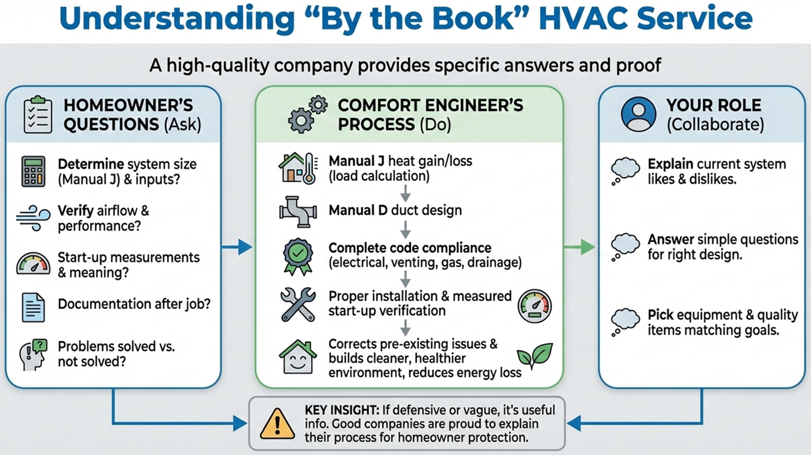

Manual J
Load calculations explained
See what goes into a real Manual J and why it protects comfort and equipment life.

Education
Manual J - what it is and why it matters
Manual J is the industry-standard method for calculating a home's heating and cooling needs. It prevents oversizing/undersizing and gives a room-by-room baseline for comfort and efficiency.

A real Manual J is measured, documented, and tied to equipment sizing.
What a real Manual J includes
- Measurements (walls, ceilings, windows, orientation)
- Insulation levels and construction details
- Infiltration (air leakage assumptions)
- Occupancy and internal loads (people, appliances)
- Design temperatures (Utah climate assumptions)
- Room-by-room results (not just a single number)
Red flags (shortcuts)
- "We size by square footage only."
- "We match the existing unit."
- No written output or assumptions.
- They won't measure windows/insulation/leakage.
How this connects to duct sizing
Manual J determines required airflow and capacity. Manual D uses those results to design duct sizes so each room gets the right airflow quietly and efficiently.